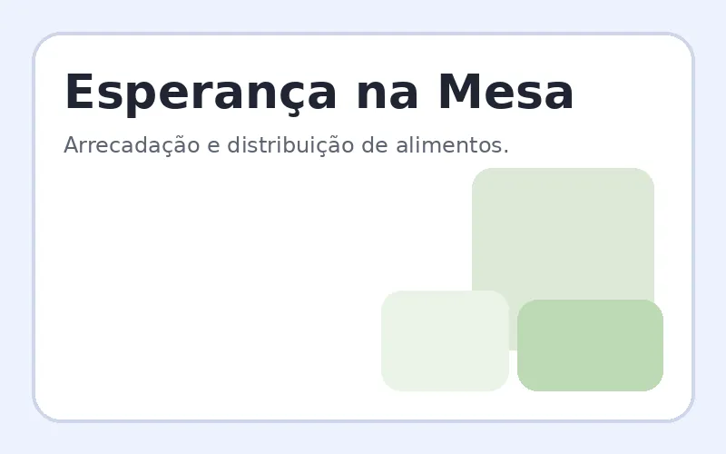

Esperança na Mesa
O projeto arrecada alimentos e monta cestas básicas para famílias acompanhadas pelo Instituto. As campanhas são realizadas ao longo do ano, especialmente em períodos de maior necessidade.
Como contribuir: doando alimentos, recursos financeiros ou ajudando na organização das entregas.